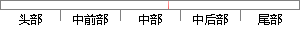

根据大小的不同还可分为等分方式和差分方式。
片段位置图

相似结果
相似片段：分区法固定分区法指内存中分区的个数固定不变根据分区大小的不同还可以分为等分方式和分区差分方式动态分区法各个分区的大小是在相应的进程需要内存时根据需要建立...
| 标题 | 《第19讲_第9章嵌入式操作系统uCOS-II_53页 - 综合课件 - 道客巴巴》 |
| 对比库 | PaperRater云论文库 |
| 网址 | http://www.doc88.com/p-572886777850.html |
| 相似率 | 100% （严重抄袭） |
※ 片段修改建议 ※
近似词参考：- 等分：平分
- 大小：巨细
- 方式：体例 体式格局 方法
- 根据：按照 凭据 依据
- 不同：分歧 差别
系统自动生成语句：按照巨细的分歧还可分为平分体例和差分体例。
注：本片段修改建议为系统自动生成，仅供参考。